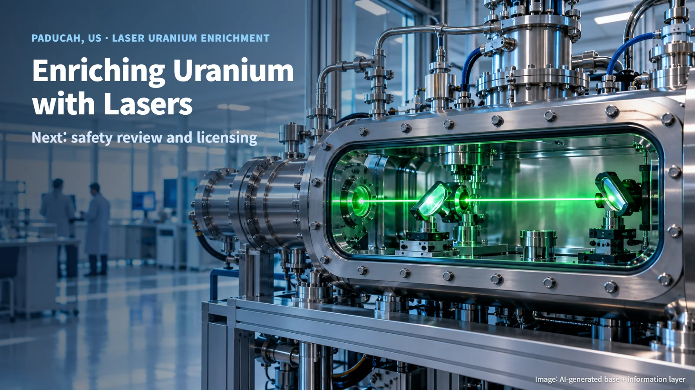
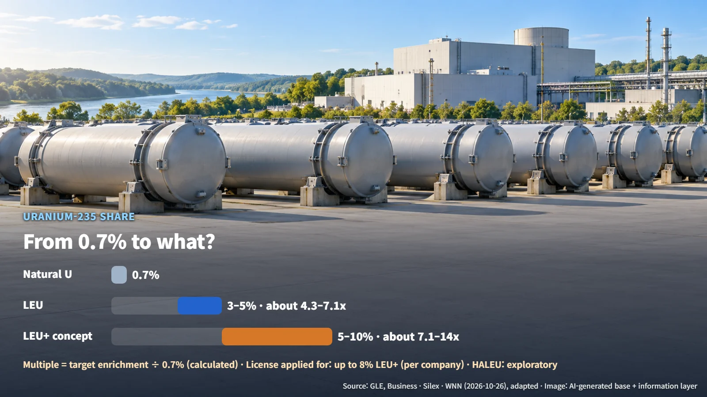
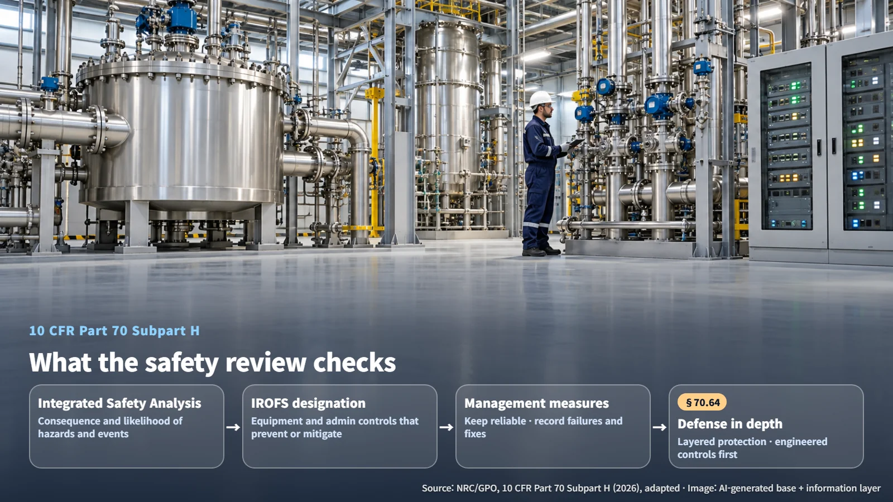
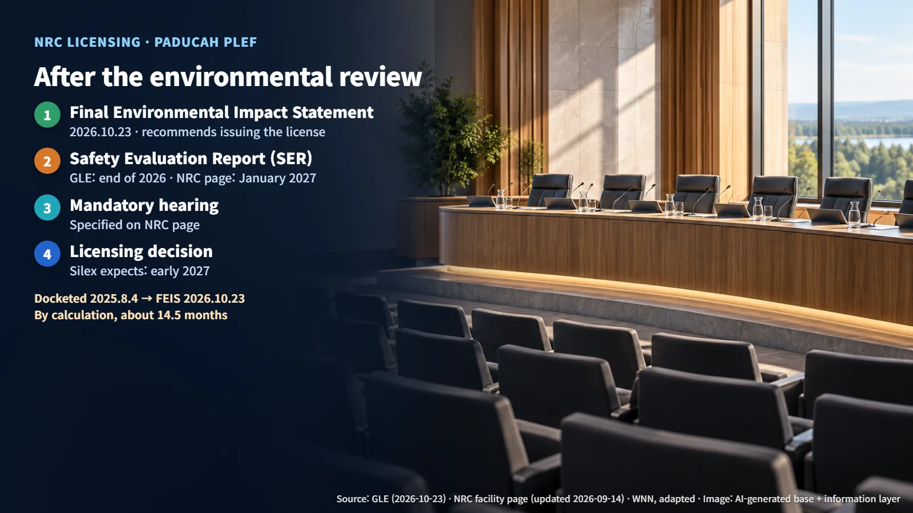

United States · Uranium Enrichment
Enriching Uranium with Lasers: What Comes After the Environmental Review at Paducah
The NRC has issued the Final Environmental Impact Statement for the Paducah Laser Enrichment Facility; the Safety Evaluation Report, a mandatory hearing and the licensing decision come next.
"Enriching uranium with lasers" sounds like a scene from a science-fiction film. In Kentucky, a plant built around exactly this technology is working its way through real federal licensing. On October 23, 2026, Global Laser Enrichment (GLE) announced that the U.S. Nuclear Regulatory Commission (NRC) had issued the Final Environmental Impact Statement for the Paducah Laser Enrichment Facility (PLEF). This article walks through how the technology works, what the facility plans to make, and which gates remain before it can operate.

From 0.7% to What? Laser Enrichment and the Product Lineup
Natural uranium contains only about 0.7% uranium-235, the isotope that splits most readily in a reactor. Enrichment is the process of raising that share. Laser enrichment relies on laser excitation: it selectively changes the energy state of molecules that contain one particular isotope, which makes those molecules separable from the rest. Picture a heap of identical-looking beads where a beam of light tags only one kind, so you can pick those out. The SILEX technology, for which GLE holds the exclusive license, uses uranium in the form of uranium hexafluoride (UF6).
The company describes four product lines. The first is natural-grade UF6, made by drawing on a depleted uranium purchase agreement signed with the U.S. Department of Energy (DOE) in 2016 (depleted uranium is the material left over after enrichment, with a lower uranium-235 share). The second is conventional 3–5% low-enriched uranium (LEU) for today's large light-water reactors. The third is a market concept for 5–10% LEU+, aimed at demand for longer-cycle and accident-tolerant fuels. The fourth is an exploratory business in high-assay low-enriched uranium (HALEU) for some advanced reactors and small modular reactors (SMRs). Taking 0.7% as the starting point, a quick calculation shows how far each product has to be concentrated:
- 3% LEU: 3 ÷ 0.7 — by calculation, about 4.3 times
- 5% LEU: 5 ÷ 0.7 — by calculation, about 7.1 times
- 10% LEU+: 10 ÷ 0.7 — by calculation, about 14 times
The higher the target enrichment, the more the uranium-235 has to be concentrated, and the scope of licensing to be checked changes from product to product. According to World Nuclear News, the company said the license it has applied for covers production of up to 8% LEU+. For LEU+ to become reactor fuel, the final permitted enrichment level and the fuel and transport licenses all have to be settled together. HALEU remains an exploratory line, weighed against design-specific demand and separate licensing.

The Safety Review That Follows the Environmental Review
Licensing an enrichment plant runs on two tracks. The environmental track concluded with the Final Environmental Impact Statement (FEIS), in which the NRC recommended issuing a construction and operating license. The remaining track is the safety and security review, and the safety review concludes with a Safety Evaluation Report (SER).
The yardstick for the safety review is the federal regulation 10 CFR Part 70 Subpart H, which applies additional safety requirements to enrichment plants and other facilities that handle special nuclear material above a critical mass. At its center is the Integrated Safety Analysis (ISA). The ISA ties together radiological, chemical and facility hazards with internal and external events, and evaluates both the consequences of an accident and its likelihood. High-consequence events must be highly unlikely or have their consequences mitigated, and the process must stay subcritical (a state in which a chain reaction cannot sustain itself) under both normal and credible abnormal conditions. Protection against natural phenomena, fire and chemical hazards is also part of the review.
Equipment and administrative controls that prevent or mitigate accidents are designated IROFS (items relied on for safety). The applicant must have management measures in place so that these items work reliably when needed, and must record failures along with their causes and corrective actions. Defense in depth under §70.64 is a layered approach that avoids resting safety entirely on any single element, and it prefers engineered controls over administrative controls to the extent practical. With the environmental finding now issued, the remaining safety review is about confirming the evidence that these safeguards work as intended in the process. The permitted products, production volumes and inspection conditions will be fixed in the final SER and the license itself.

A Buyer Is Lined Up; Performance and Licensing Come Next
In October 2025, Australia's Silex announced that the technology had reached Technology Readiness Level 6 (TRL, a scale of how close a technology is to commercial use) and had been independently assessed. The test loop in Wilmington, North Carolina, operates under GNF-A's SNM-1097 license and has been scaled up to an industrial-scale separator. The next step, the TRL-7 program, involves detailed design and demonstration of full-size production equipment to gather data for comparing the performance of the commercial system.
The buyer came first. Silex said that in September 2026 Canada's Cameco signed an exclusive offtake agreement to purchase all of PLEF's future output. Price and delivery guarantee terms have not been disclosed. Securing a sales channel and securing plant performance and licensing are separate items the project has to deliver. Still ahead are the final license scope, TRL-7 performance data, and investment and construction decisions; confirming the economics will require real operating rates, product quality and cost data.
The Next Gate: The SER and the Mandatory Hearing
According to NRC records, the application was formally docketed on August 4, 2025, and the FEIS was issued on October 23, 2026. From August 4, 2025, to October 23, 2026 is, by calculation, about 14 and a half months.
Estimates for the SER differ slightly by source. GLE's October 23 announcement points to the end of 2026, while the NRC facility page updated on September 14, 2026, gives January 2027. The NRC page also specifies a mandatory hearing. The remaining sequence is SER issuance → mandatory hearing → licensing decision, and Silex has said it expects licensing to be completed in early 2027. The milestones to watch are the SER's release and the product- and enrichment-specific conditions written into the license.

For laser enrichment to enter the fuel supply chain, it has to pass the environmental, safety, performance and investment gates in turn. The Paducah facility has cleared the environmental gate, and the safety and security review is under way. With that sequence in mind, readers can tell at a glance which gate the next piece of news is about.
Written and reviewed by the site editor. Figures, dates and organization names were checked against the original sources listed below (reviewed 2026-10-27).